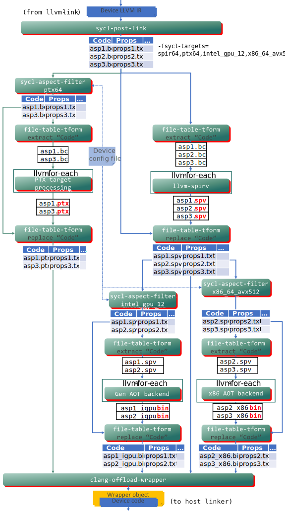

Behavior for optional kernel features¶
This design document describes the changes that are needed in DPC++ in order to
conform to the SYCL 2020 specification regarding the behavior of applications
that use optional kernel features. An optional kernel feature is any feature
that is supported by some devices and not by others. For example, not all
devices support 16-bit floating point operations, so the sycl::half data type
is an optional kernel feature. Some DPC++ extensions like AMX are also
optional kernel features.
The requirements for this design come mostly from the SYCL 2020 specification
section 5.7 “Optional kernel features” but they also encompass the C++
attribute [[sycl::device_has()]] that is described in section 5.8.1 “Kernel
attributes” and section 5.8.2 “Device function attributes”.
Definition of terms¶
A kernel’s static call graph¶
The term “static call graph” of a kernel means the set of all functions that
a kernel may call, including functions that are called transitively from other
functions. In standard SYCL, device code is not allowed to contain function
pointers, virtual functions, or indirect function calls. It is therefore easy
to compute the static call graph of a kernel. By starting at the kernel
function itself (e.g. the function passed to parallel_for), the compiler can
identify all functions called by that function, then it can find all functions
called by those functions, etc. Depending on the tool which does the analysis,
the “static call graph” could include only those functions that reside in the
same translation unit as the kernel, or it could include all functions that
reside in the same executable image (or shared library) as the kernel. In the
sections below, we try to make the distinction clear whenever we refer to a
kernel’s static call graph.
We are contemplating a DPC++ extension that would allow some limited use of function pointers in device code. This feature is not yet fully defined or supported. We expect that the semantics of this feature will include some way for the compiler to deduce a limited set of possible targets for each indirect function call. Therefore, it is still possible for the compiler to construct a “static call graph” for each kernel, the only difference is that each call site now adds a set of possible target functions to a kernel’s static call graph. The details about how this will work are expected to be included in the DPC++ extension specification that enables indirect function calls.
An exported device function¶
The term “exported device function” means a device function that is exported from a shared library as defined by Device Code Dynamic Linking.
The FE compiler¶
The term “FE compiler” refers to the entire DPC++ compiler chain that runs
when the user executes the clang++ command. This includes the clang
front-end itself, all passes over LLVM IR, the post-link tool, and any AOT
compilation phases (when the user compiles in AOT mode). The FE compiler does
not include the JIT compiler which translates SPIR-V (or another IL format)
into native code when the application executes.
Requirements¶
There are several categories of requirements covered by this design. Each of these is described in more detail in the sections that follow:
The FE compiler must issue a diagnostic in some cases when a kernel or device function uses an optional feature. However, the FE compiler must not generate a diagnostic in other cases.
The runtime must raise an exception when a kernel using optional features is submitted to a device that does not support those features. This exception must be raised synchronously from the kernel invocation command (e.g.
parallel_for()).The runtime must not raise an exception (or otherwise fail) merely due to speculative compilation of a kernel for a device, when the application does not specifically submit the kernel to that device.
Diagnostics from the FE compiler¶
In general, the FE compiler does not know which kernels the application will submit to which devices. Therefore, the FE compiler does not generally know which optional features a kernel can legally use. Thus, in general, the FE compiler must not issue any diagnostic simply because a kernel uses an optional feature.
The only exception to this rule occurs when the application uses the C++
attribute [[sycl::device_has()]]. When the application decorates a kernel or
device function with this attribute, it is an assertion that the kernel or
device function is allowed to use only those optional features which are listed
by the attribute. Therefore, the FE compiler must issue a diagnostic if the
kernel or device function uses any other optional kernel features.
The SYCL 2020 specification only mandates this diagnostic when a kernel or
device function that is decorated with [[sycl::device_has()]] uses an
optional kernel feature (not listed in the attribute), and when that use is
in the kernel’s static call graph as computed for the translation unit that
contains the kernel function. Thus, the compiler is not required to issue a
diagnostic if the use is in a SYCL_EXTERNAL function that is defined in
another translation unit.
Note that this behavior does not change when the compiler runs in AOT mode. Even if the user specifies a target device via “-fsycl-targets”, that does not necessarily mean that the user expects all the code in the application to be runnable on that device. Consider an application that uses some middleware library, where the library’s header contains kernels optimized for different devices. An application should be able to compile in AOT mode with this library without getting errors. Therefore the AOT compiler must not fail simply because the middleware header contains device code for devices that are not being compiled for.
Runtime exception if device doesn’t support feature¶
When the application submits a kernel to a device via one of the kernel
invocation commands (e.g. parallel_for()), the runtime must check if the
kernel uses optional features that are not supported on that device. If the
kernel uses an unsupported feature, the runtime must throw a synchronous
errc::kernel_not_supported exception.
When doing these checks, the runtime must consider all uses of optional features in the kernel’s static call graph, regardless of whether those uses are in the same translation unit as the kernel and regardless of whether those uses come from device code in a shared library.
This exception, however, is only required for features that are exposed via a
C++ type or function. Examples of this include sycl::half or instantiating
sycl::atomic_ref for a 64-bit type. If the kernel relies on optional
features that are more “notional” such as sub-group independent forward
progress (info::device::sub_group_independent_forward_progress), no exception
is required.
To further clarify, this exception must be thrown in the following circumstances:
For a kernel that is not decorated with
[[sycl::device_has()]], the exception must be thrown if the kernel uses a feature that the device does not support.For a kernel that is decorated with
[[sycl::device_has()]], the exception must be thrown if the device does not have the aspects listed in that attribute. Note that the exception must be thrown even if the kernel does not actually use a feature corresponding to the aspect, and it must be thrown even if the aspect does not correspond to any optional feature.For a kernel that is decorated with
[[sycl::device_has()]], the FE compiler will mostly check (at compile time) whether the kernel uses any features that are not listed in the attribute. However, this check only results in a warning, so the runtime is still responsible for throwing the exception if any of the functions called by the kernel uses an optional feature that the device does not support.For a kernel that is decorated with the
[[sycl::reqd_work_group_size(W)]]or[[sycl::reqd_sub_group_size(S)]]attribute, the exception must be thrown if the device does not support the work group sizeWor the sub-group sizeS.
Note that the exception must be thrown synchronously, not delayed and thrown on the queue’s asynchronous handler.
No runtime exception for speculative compilation¶
It is currently common for the runtime to speculatively compile some kernels. For example, DPC++ may bundle all kernels from the same translation unit together into a single device image. When the application submits one kernel K to a device D, the runtime actually compiles all kernels in K’s device image for device D. Let’s assume in this example that the kernel K uses only features that are supported by D. It would be illegal for the runtime to throw an exception in such a case just because some other kernel in the same device image uses a feature that is not supported by device D.
Compiler switch to diagnose optional feature usage¶
As noted above, the FE compiler does not generally know which kernels will be submitted to which devices, and this limits the errors that the FE compiler can diagnose. However, some users may know that all code in their application will run on some specific target device, and these users would prefer a compiler diagnostic if any kernel uses a feature that is not compatible with that device. This is particularly true for FPGA users who always AOT compile their application for a specific FPGA device.
To satisfy this use case, this design adds a new compile-time switch
-fsycl-fixed-targets which is an assertion by the user that all device code
in the translation unit is expected to be runnable on the specified target
device(s).
The definition of this switch is:
-fsycl-fixed-targets=target,target...This switch may be passed on the compilation line as an assertion by the user that all device code in the source file (translation unit) is expected to be runnable on the target devices that are listed, and it will not be run on any other target device. The compiler checks whether the device code uses any features that are incompatible with any of the listed devices. If so, the compiler raises a diagnostic.
This switch may be used either with or without the
-fsycl-targetsswitch. When used without-fsycl-targets, the-fsycl-fixed-targetsswitch checks for kernels that use features that are not compatible with the listed target devices, but those kernels are still just-in-time (JIT) compiled when the application runs. When used with-fsycl-targets, the compiler does the same checks, but it also compiles the kernels ahead-of-time (AOT). When both switches are used together, it is typical to pass the same set of target devices to both switches.
In order for readers of this design document to better understand the
relationship between the target list in -fsycl-fixed-targets vs. the target
list in -fsycl-targets, consider a weird case where both switches are
specified with different target lists. If -fsycl-fixed-targets=X is
specified on the command line, the compiler checks that all device code is
compatible with all targets in list X, so it issues a diagnostic if any of
that code uses a feature that is incompatible with any of those targets. As
described below, this command line switch also provides certain guarantees
about how kernels in the translation unit are bundled together into device
images.
Let’s further assume in our example that the -fsycl-targets=Y is also
specified on the command line. This causes the compiler to AOT compile all
eligible device code for each target in Y. However, the
-fsycl-fixed-targets switch indicates that the device code is only eligible
to run on targets in the X list. As a result, the -fsycl-targets switch
will only AOT compile for the devices that are present in both lists (i.e. the
intersection of the two sets X and Y).
Must preserve ability to precisely control device images¶
FPGA users need the ability to control how kernels are bundled together into device images because an FPGA device is reprogrammed with the contents of a single device image. Most FPGA users want all kernels in their application to be bundled into a single device image, so that they can all exist on the same FPGA device at the same time. Advanced users may want to partition some kernels into one device image and other kernels into another device image, allowing kernels to be programmed on two (or more) different FPGA devices.
FPGA users are accustomed to doing this via the -fsycl-device-code-split
link-time switch. However, not all users agree on the semantic of this switch.
Whereas FPGA users see this switch as a hard requirement that controls the
way kernels are bundled into device images, other users see this switch as an
optimization that controls JIT-time overhead. These users do not expect
-fsycl-device-code-split to ever produce incorrect code which could lead to
an exception at runtime.
To satisfy both users, the meaning of -fsycl-device-code-split is changed as
follows. When used without -fsycl-fixed-targets, it specifies a minimum
granularity of splitting, but the implementation may perform additional device
code splits in order to preserve the correctness of the code.
However, when -fsycl-device-code-split is used in conjunction with
-fsycl-fixed-targets, we can guarantee that additional device code splits are
not needed for correctness. Thus, when both switches are specified together,
the -fsycl-device-code-split provides the precise control over bundling of
kernels into device images that FPGA users expect.
Note that these switches are useful even for non-FPGA users. For example,
non-FPGA users may want to use the device_global property
device_image_scope, which requires even non-FPGA users to have precise
control over the way kernels are bundled into device images.
The new definition of -fsycl-device-code-split is as follows:
-fsycl-device-code-split[=value]This switch helps optimize the JIT time performance by adjusting the way kernels are grouped together into device images. The value
offplaces most kernels into one large device image, which avoids some duplicated code but results in all kernels being JIT compiled whenever one of them is submitted to a device. The valuesper_kernelandper_sourcecause kernels to be split into multiple device images, which can avoid JIT overhead for kernels that are never submitted to a device. However, these values can also cause common functions to be duplicated if they are shared by kernels in two or more device images.Normally, this switch specifies only a minimum granularity for device code splitting, and DPC++ may perform additional device code splits beyond those that are requested. However, translation units that are compiled with
-fsycl-fixed-targetshave stricter guarantees. All kernels from translation units that are compiled with the same set of targets are first logically bundled into the same device image. Kernels in each of these device images are then split exactly as specified by-fsycl-device-code-split. For example, when source files are compiled with-fsycl-fixed-targets=Xand then linked with-fsycl-device-code-split=off, all kernels in those source files are guaranteed to be grouped into a single device image.The
valuecan be any one of the following:
per_kernel: Creates a separate device image for each SYCL kernel. Each device image will contain a kernel and all its dependencies, such as called functions and used variables.
per_source: Creates a separate device image for each source (translation unit). Each device image will contain a collection of kernels grouped on a per-source basis and all their dependencies, such as all used variables and called functions, including theSYCL_EXTERNALmacro-marked functions from other translation units.
off: Creates a single device image for all kernels.
auto: The compiler will use a heuristic to select the best way of splitting device code. This is the same as specifying-fsycl-device-code-splitwith no value.
Design¶
Changes to DPC++ headers¶
With the exception of the [[sycl::reqd_work_group_size()]] and
[[sycl::reqd_sub_group_size()]] attributes, all kernel optional features
are associated with some device aspect. For example, the sycl::half type
is an optional feature which is only supported on devices that have the
aspect::fp16 aspect. We can therefore use device aspects as a way to
describe the set of optional features that a kernel uses (with the exception
of the required work-group or sub-group size).
As we will see later, it is helpful to decorate all APIs in DPC++ headers that
correspond to optional kernel features with a C++ attribute that identifies the
associated aspect. We cannot use the [[sycl::device_has()]] attribute for
this purpose, though, because that attribute is allowed only for functions.
Instead, we invent a new internal attribute [[sycl_detail::uses_aspects()]]
that can be used to decorate both functions and types. This attribute is not
documented for user code; instead it is an internal implementation detail of
DPC++.
Like all use of C++ attributes in the DPC++ headers, the headers should spell
the attribute using initial and trailing double underscores
([[__sycl_detail__::__uses_aspects__()]]). We show that form in the code
samples below, but this design document uses the form without the underbars
elsewhere. Both forms refer to the same attribute.
To illustrate, the type sycl::half is an optional feature whose associated
aspect is aspect::fp16. We therefore decorate the declaration like this:
namespace sycl::detail::half_impl {
class [[__sycl_detail__::__uses_aspects__(aspect::fp16)]] half {
/* ... */
};
} // namespace sycl::detail::half_impl;
This attribute is also used to decorate function declarations that correspond to optional features. Illustrating a hypothetical AMX extension:
[[__sycl_detail__::__uses_aspects__(aspect::ext_intel_amx)]]
void amx_multiply();
This attribute can also be used to decorate class templates where only certain
instantiations correspond to optional features. See “Appendix: Adding an
attribute to 8-byte atomic_ref” for an illustration of how this attribute
can be used in conjunction with partial specialization to mark only certain
instantiations of sycl::atomic_ref as an optional feature.
Because the [[sycl_detail::uses_aspects()]] attribute is only needed for the
device compiler, the headers should protect it with
#ifdef __SYCL_DEVICE_ONLY__. This avoids warnings when our headers are
compiled with a third-party host compiler.
Although the examples above show only a single aspect parameter to the
[[sycl_detail::uses_aspects()]] attribute, this attribute should support a
list of aspects, similar to the [[sycl::device_has()]] attribute. This will
allow us to support future features that depend on a conjunction of aspects
(e.g. a feature that does atomic operations on 64-bit floating point values
might be decorated with
[[sycl_detail::uses_aspects(aspect::fp64, aspect::atomic64)]]).
Unfortunately, the fundamental type double is also an optional kernel
feature. Since there is no type definition for double in the headers, there
is no convenient place to add an attribute. Instead, the FE device compiler
must behave as though there was an implicit
[[sycl_detail::uses_aspects(aspect::fp64)]] attribute for any device code
that uses the double type.
New LLVM IR metadata¶
In order to communicate the information from [[sycl::device_has()]] and
[[sycl_detail::uses_aspects()]] attributes to the DPC++ post-link tool, we
introduce several new LLVM IR metadata.
The named metadata !sycl_types_that_use_aspects conveys information about
types that are decorated with [[sycl_detail::uses_aspects()]]. This metadata
is not referenced by any instruction in the module, so it must be looked up by
name. The format looks like this:
!sycl_types_that_use_aspects = !{!0, !1, !2}
!0 = !{!"class.sycl::detail::half_impl::half", i32 8}
!1 = !{!"class.sycl::amx_type", i32 9}
!2 = !{!"class.sycl::other_type", i32 8, i32 9}
The value of the !sycl_types_that_use_aspects metadata is a list of unnamed
metadata nodes, each of which describes one type that is decorated with
[[sycl_detail::uses_aspects()]]. The value of each unnamed metadata node
starts with a string giving the name of the type which is followed by a list of
i32 constants where each constant is a value from enum class aspect telling
the numerical value of an aspect from the type’s
[[sycl_detail::uses_aspects()]] attribute. In the example above, the type
sycl::detail::half_impl::half uses an aspect whose numerical value is
8 and the type sycl::other_type uses two aspects 8 and 9.
NOTE: The reason we choose this representation is because LLVM IR does not allow metadata to be attached directly to types. This representation works around that limitation by creating global named metadata that references the type’s name.
To synchronize the integral values of given aspects between the SYCL headers and
the compiler, the !sycl_aspects metadata is added to the module, based on the
values defined in the enum. Inside this metadata node, each value of the aspect
enum is represented by another metadata node with two operands; the name of the
value and the corresponding integral value. An example of this is:
!sycl_aspects = !{!0, !1, !2, ...}
!0 = !{!"host", i32 0}
!1 = !{!"cpu", i32 1}
!2 = !{!"gpu", i32 2}
...
NOTE: The !sycl_aspects metadata is both used by the compiler to identify
the aspect values of implicit aspect requirements, such as aspect::fp64 from
the use of double, and to offer better diagnostic messages.
We also introduce three metadata that can be attached to a function definition:
The
!sycl_declared_aspectsmetadata is used for functions that are decorated with[[sycl::device_has()]]. The value of the metadata node is a list ofi32constants, where each constant is a value fromenum class aspectrepresenting the aspects listed in the attribute.The
!sycl_used_aspectsmetadata is used to store the propagated information about all aspects used by a kernel or exported device function. The value of this metadata node is also a list ofi32constants, where each constant is a value fromenum class aspectrepresenting the aspects that are used by the kernel or exported device function.The
!sycl_fixed_targetsmetadata is used to decorate kernel functions andSYCL_EXTERNALfunctions, telling the value of the-fsycl-fixed-targetsswitch that was used to compile the translation unit. The value of this metadata node is a list of string literals corresponding to the list of targets specified on that command line switch. If the translation unit is compiled without the-fsycl-fixed-targets, the metadata has an empty list.The reason an empty metadata is added to functions compiled without the command line switch is to aid with the error checking that happens in the
sycl-post-linktool w.r.t.SYCL_EXTERNALfunctions. The presence of the empty metadata allowssycl-post-linkto identify functions that are definitely known to be compiled without-fsycl-fixed-targets. Functions with no metadata might be created by backend IR passes, even when this switch is specified.
To illustrate, the following IR corresponds to a function foo that is
decorated with [[sycl::device_has()]] where the required aspects have the
numerical values 8 and 9. In addition, the function uses an optional
feature that corresponds to an aspect with numerical value 8.
define void @foo() !sycl_declared_aspects !1 !sycl_used_aspects !2 {}
!1 = !{i32 8, i32 9}
!2 = !{i32 8}
Changes to the DPC++ front-end¶
The front-end of the device compiler is responsible for parsing the
[[sycl::device_has()]] and [[sycl_detail::uses_aspects()]] attributes and
transferring the information to the LLVM IR metadata described above according
to the following rules:
If the translation unit contains any type definitions that are decorated with
[[sycl_detail::uses_aspects()]], the front-end creates an!sycl_types_that_use_aspectsmetadata describing the aspects used by all such types.If a function is decorated with
[[sycl_detail::uses_aspects()]], the front-end adds an!sycl_used_aspectsmetadata to the function’s definition listing the aspects from that attribute.If a function is decorated with
[[sycl::device_has()]], the front-end adds an!sycl_declared_aspectsmetadata to the function’s definition listing the aspects from that attribute.If a completed enum is decorated with
[[sycl_detail::sycl_type(aspect)]]the front-end adds an!sycl_aspectsmetadata to the module containing one metadata node for each value in the enum. If there are multiple enum definitions with the[[sycl_detail::sycl_type(aspect)]]attribute a diagnostic is issued.
New LLVM IR pass to propagate aspect usage¶
We add a new IR phase to the device compiler which does the following:
Creates (or augments) a function’s
!sycl_used_aspectsmetadata with aspects that come from references to types in thesycl_types_that_use_aspectslist.If a function has the
!sycl_declared_aspectsmetadata, creates (or augments) the function’s!sycl_used_aspectsmetadata with aspects from the!sycl_declared_aspectslist.Propagates each function’s
!sycl_used_aspectsmetadata up the static call graph so that each function lists the aspects used by that function and by any functions it calls.Creates an
!sycl_fixed_targetsmetadata for each kernel function orSYCL_EXTERNALfunction that is defined. This is done regardless of whether the-fsycl-fixed-targetscommand line switch is specified. If the switch is not specified, the metadata has an empty list of targets.
Additionally, the pass will issue warning diagnostics in the following cases:
If any function that has
!sycl_declared_aspectsuses an aspect not listed in that declared set.If the
-fsycl-fixed-targetscommand line switch is specified and any function uses an aspect that is not compatible with all target devices specified by that switch.
It is important that this IR phase runs before any other optimization phase that might eliminate a reference to a type or inline a function call because such optimizations will cause us to miss information about aspects that are used. Therefore, it is recommended that this new phase run first, before all other IR phases.
Implementing the first bullet point is straightforward. The implementation can
scan the IR for each function looking for instructions that reference a type.
It can then see if that type is in the !sycl_types_that_use_aspects set; if
so it adds the type’s aspects to the function’s !sycl_used_aspects set.
While doing this, the implementation must have a special case for the double
type because the front-end does not include that type in the
!sycl_types_that_use_aspects set. If a function references the double
type, the implementation implicitly assumes that the function uses
aspect::fp64 and adds that aspect to the function’s !sycl_used_aspects
set. If !sycl_used_aspects is attached to instruction then it is also added
to the function’s !sycl_used_aspects set.
NOTE: This scan of the IR will require comparing the type referenced by
each IR instruction with the names of the types in the
!sycl_types_that_use_aspects metadata. It would be very inefficient if we
did a string comparison each time. As an optimization, the implementation can
first lookup up each type name in the !sycl_types_that_use_aspects metadata
set, finding the “type pointer” that corresponds to each type name. Then the
pass over the IR can compare the type pointer in each IR instruction with the
type pointers from the !sycl_types_that_use_aspects metadata set.
The second bullet point requires building the static call graph, but the
implementation need not scan the instructions in each function. Instead, it
need only look at the !sycl_used_aspects metadata for each function,
propagating the aspects used by each function up to it callers and augmenting
the caller’s !sycl_used_aspects set.
Diagnosing warnings for the fifth bullet point is then straightforward. The
implementation looks for functions that have !sycl_declared_aspects and
compares that set with the !sycl_used_aspects set (if any). If a function
uses an aspect that is not in the declared set, the implementation issues a
warning.
Diagnosing warnings for the sixth bullet point requires the device
configuration file which gives the set of allowed optional features for
each target device. The implementation looks for functions that have either
!sycl_declared_aspects or !sycl_used_aspects, and it compares the aspects
from these metadata to the allowed list in the configuration file. If any
aspect is not on the allowed list, the implementation issues a warning. In
addition, the implementation looks for device functions that have
!intel_reqd_sub_group_size or !reqd_work_group_size. If the required
sub-group size or the required work-group size is not allowed for the target
devices according to the configuration file, the implementation issues a
warning.
One weakness of this design is that the warning message will only be able to
contain the source location of the problem if the compiler was invoked with
-g because this is the only time when the front-end propagates source
location information into the IR. To compensate, the warning message displays
the static call chain that leads to the problem. For example:
warning: function 'foo' uses aspect 'fp64' not listed in 'sycl::device_has'
use is from this call chain:
foo()
bar()
boo()
compile with '-g' to get source location
Including the call chain in the warning message will require maintaining some additional information during the traversal of the static call graph described above.
When the compiler is invoked with -g, the implementation uses the
!DILocation metadata to improve the warning message with source file, line,
and column information like so:
hw.cpp:27:4: warning: function 'foo' uses aspect 'fp64' not listed in 'sycl::device_has'
use is from this call chain:
foo()
bar() hw.cpp:15:3
boo() hw.cpp:25:5
In the example above, the location hw.cpp:27:4 gives the source location of
the code that uses the fp64 aspect, in this case somewhere in the boo()
function. The location hw.cpp:15:3 tells the location in foo() of the call
to bar(), etc.
NOTE: Issuing this warning message from an IR pass is a compromise. We would get better source location if the front-end diagnosed this warning. However, we feel that the analysis required to diagnose this warning would be too expensive in the front-end because it requires an additional pass over the AST. By contrast, we can diagnose the warning more efficiently in an IR pass because traversal of the IR is much more efficient than traversal of the AST. The downside, though, is that the warning message is less informative.
Pre- and post-optimization aspect propagation¶
Sometimes aspects that are used by a kernel in source code are eliminated during
optimization. The most common case is when a kernel uses a double precision
floating point literal to initialize a single precision floating point variable.
Although the kernel uses the aspect fp64 (corresponding to double) in its
source code, the optimizer commonly replaces the double precision literal with a
single precision literal, and this can sometimes mean that the kernel does not
actually rely on the fp64 aspect at all. We therefore have a quandary, should
kernels like this be allowed to run on a device that doesn’t have fp64
support?
It seems too extreme to raise an exception if the application attempts to submit
a kernel like this to a device without fp64 support because applications like
this previously ran without error (prior to this design being implemented).
However, it also seems useful to issue a warning in a case like this if the
application specifically decorated the kernel with [[sycl::device_has()]]
(i.e. requesting a warning if the kernel uses aspects not listed in that
attribute). We therefore run the aspect propagation pass twice: once before
optimization and again after optimization.
The first run of the pass takes a list of aspect names to exclude when saving
the result of the propagation. It will still propagate the excluded aspects to
correctly issue strict warning diagnostics for the cases mentioned above, but
after the pass finishes functions will only have the excluded aspects in their
!sycl_used_aspects metadata if they had them prior to the execution of the
pass.
In the second run of the pass, all aspects are propagated and saved. For the aspects that were not excluded from the first run of the pass this will have no effect and the pass may elect to ignore these aspects. To avoid repeating warnings issued by the previous execution of the pass, this run will not issue any warning diagnostics.
Assumptions on other phases of clang¶
The post-link tool (described below) uses the !sycl_used_aspects and
!sycl_declared_aspects metadata, so this metadata must be retained by any
other clang passes. However, post-link only uses this metadata when it
decorates the definition of a kernel function or the definition of an exported
device function, so it does not matter if intervening clang passes discard the
metadata on other device functions.
We think this is a safe assumption for two reasons. First, the existing design
must already preserve the !reqd_work_group_size metadata that decorates
kernel functions. Second, the kernel functions and exported device functions
always have external linkage, so there is no possibility that a clang phase
will optimize them away.
NOTE: Ideally, we would change the llvm-link tool to somehow preserve the
!sycl_declared_aspects and !sycl_used_aspects metadata for functions
marked SYCL_EXTERNAL so that we could compare the declared aspects (in the
module that imports the function) with the used aspects (in the module the
exports the function). This would allow us to diagnose errors where the
importing translation unit’s declared aspects do not match the aspects actually
used by the function.
We do not propose this change as part of this design, though. We expect that
this will not be a common error because applications can avoid this problem by
declaring the SYCL_EXTERNAL function in a common header that is included by
both the importing and the exporting translation unit. If the declaration (in
the header) is decorated with [[sycl::device_has()]], the shared declaration
will ensure that the definition stays in sync with the declaration.
Changes to the post-link tool¶
As noted in the requirements section above, DPC++ currently bundles kernels together regardless of the optional features they use, and this can lead to problems resulting from speculative compilation. To illustrate, consider kernel K1 that uses no optional features and kernel K2 that uses a feature corresponding to aspect A, and consider the case when K1 and K2 are bundled together in the same device image. Now consider an application that submits K1 to a device that does not have aspect A. The application should expect this to work, but DPC++ currently fails because JIT-compiling K1 causes the entire bundle to be compiled, and this fails when trying to compile K2 for a device that does not have aspect A.
We solve this problem by changing the post-link tool to bundle kernels and exported device functions according to the aspects that they use.
Changes to the device code split algorithm¶
The algorithm for splitting device functions into images must be changed to account for the aspects used by each kernel or exported device function. The goal is to ensure that two kernels or exported device functions are only bundled together into the same device image if they use exactly the same set of aspects.
For the purposes of this analysis, the set of UsedAspects aspects is computed
by taking the union of the aspects listed in the kernel’s (or device
function’s) !sycl_used_aspects and !sycl_declared_aspects sets. This is
consistent with the SYCL specification, which says that a kernel decorated with
[[sycl::device_has()]] may only be submitted to a device that provides the
listed aspects, regardless of whether the kernel actually uses those aspects.
We must also split two kernels into different device images if they have
different [[sycl::reqd_sub_group_size()]] or different
[[sycl::reqd_work_group_size()]] values. The reasoning is similar as the
aspect case. The JIT compiler currently raises an error if it tries to compile
a kernel that has a required sub-group size if the size isn’t supported by the
target device. The behavior for required work-group size is less clear. The
Intel implementation does not raise a JIT compilation error when compiling a
kernel that uses an unsupported work-group size, but other backends might.
Therefore, it seems safest to split device code based required work-group size
also.
The algorithm is different, though, for translation units that were compiled
with -fsycl-fixed-targets. Since the user has asserted that device code in
these translation units will be run only on the targets listed in that
switch, we know that all such device code can be bundled together in the same
device image so long as the translation units were compiled with the same
-fsycl-fixed-targets switch.
Therefore, two kernels or exported device functions can only be bundled together into the same device image if:
They both have
!sycl_fixed_targetsmetadata with the same non-empty set of targets, orAll of the following are true:
Both have an empty set of
!sycl_fixed_targetsmetadata,They share the same set of UsedAspects aspects,
They either both have no required work-group size or both have the same required work-group size, and
They either both have the same numeric value for their required sub-group size or neither has a numeric value for a required sub-group size. (Note that this implies that kernels decorated with
[[intel::named_sub_group_size(automatic)]]can be bundled together with kernels that are decorated with[[intel::named_sub_group_size(primary)]]and that either of these kernels could be bundled with a kernel that has no required sub-group size.)
These criteria are an additional filter applied to the device code split
algorithm after taking into account the -fsycl-device-code-split command line
option. If the user requests per_kernel device code split, then each kernel
is already in its own device image, so no further splitting is required. If
the user requests any other option, device code is first split according to
that option, and then another split is performed to ensure that each device
image contains only kernels or exported device functions that meet the criteria
listed above.
Error checking for SYCL_EXTERNAL functions¶
After bundling the device functions into images, the sycl-post-link tool does
another pass over the IR of each image to catch errors that occur with
SYCL_EXTERNAL functions:
It’s possible that a translation unit calling a
SYCL_EXTERNALfunction did not properly decorate the function’s declaration with the set of aspects that it uses. Such an error would not be caught in earlier phases, which operate on a single translation unit at a time.It’s possible that a translation unit calling a
SYCL_EXTERNALfunction was compiled with-fsycl-fixed-targets, but the translation unit defining theSYCL_EXTERNALfunction was not compiled with this option (or was compiled to assume a different set of target devices).
If the image contains kernels that were not compiled with
-fsycl-fixed-targets, the pass works as follows:
Set FinalUsedAspects to the image’s UsedAspects set of aspects (which could be the empty set if the image has no required aspects).
Set FinalSubGroup to the image’s required sub-group size (which could be the empty set if the image has no required sub-group size).
Set FinalWorkGroup to the image’s required work-group size (which could be the empty set if the image has no required work-group size).
Scan over all functions in the image and examine the function’s metadata:
If the function has either
!sycl_used_aspectsor!sycl_declared_aspectsmetadata and one of the aspects in that metadata is not in the image’s UsedAspects set, issue a warning and add that aspect to the FinalUsedAspects set.If the function has
!intel_reqd_sub_group_sizemetadata and the size is not the same as the image’s required sub-group size, issue a warning and add that sub-group size to the FinalSubGroup set.(Since the
[[sycl::reqd_work_group_size()]]attribute cannot be specified on aSYCL_EXTERNALfunction, there is no need for a similar check on the required work-group size.)
Set the following properties in the “SYCL/device requirements” property set (described below):
If FinalUsedAspects is not the empty set, create an “aspect” property with those values.
If FinalSubGroup is not the empty set, create a “reqd_sub_group_size” property with those values.
If FinalWorkGroup is not the empty set, create a “reqd_work_group_size” property with those values.
Warning messages from this pass look like:
warning: function 'foo' uses aspect 'fp64' not expected by its calling kernel.
Missing [[sycl::device_has()]] on SYCL_EXTERNAL function?
warning: function 'bar' has required sub-group size '32' that does not match
its calling kernel. Missing [[sycl::reqd_sub_group()]] attribute on
SYCL_EXTERNAL function?
If the image contains kernels that were compiled with -fsycl-fixed-targets,
the pass works as follows:
Set FinalFixedTargets to the image’s set of fixed target devices.
Scan over all functions in the image looking for functions that have the
!sycl_fixed_targetsmetadata. If the metadata exists and its set includes any target devices not in the image’s set of fixed targets, issue a warning and set FinalFixedTargets to the intersection of the metadata’s target set and the FinalFixedTargets set. (This may result in FinalFixedTargets being the empty set.)Set the following properties in the “SYCL/device requirements” property set:
Create a “fixed_target” property (even if FinalFixedTargets is the empty set). This requires converting each target name in FinalFixedTargets to its associated aspect.
Warning messages from this pass look like:
warning: function 'foo' compiled with a different `-fsycl-fixed-targets` switch
than its calling kernel.
Create the “SYCL/device requirements” property set¶
The DPC++ runtime needs some way to know about the requirements of an image
(e.g. the set of aspects that it uses). Therefore, the sycl-post-link tool
provides this information in a new property set named
“SYCL/device requirements”.
The following table lists the properties that this set may contain and their types:
Property Name |
Property Type |
|---|---|
“aspect” |
|
“reqd_sub_group_size” |
|
“reqd_work_group_size” |
|
“fixed_target” |
|
The “aspect” property tells the set of aspects that a device must have in order
to use the image. The image is only compatible with a device that supports
all of the listed aspects. The value of the property is an array of
uint32 values, where each uint32 value is the numerical value of an aspect
from enum class aspect. The size of the property (which is always divisible
by 4) tells the number of aspects in the array.
The “reqd_sub_group_size” property tells the set of numeric sub-group sizes
that a device must support in order to use the image. (This does not include
named sub-group sizes like automatic or primary.) The image is only
compatible with a device that supports all of the listed sizes. The value
of the property is an array of uint32 values, where each uint32 value tells
a required sub-group size. The size of the property (which is always divisible
by 4) tells the number of entries in the array.
The “reqd_work_group_size” property tells the set of work-group sizes that a
device must support in order to use the image. The image is only compatible
with a device that supports all of the listed sizes. The value of the
property is a BYTE_ARRAY with entries that have the following layout:
<dim_count (uint32)> <dim0 (uint32)> ...
Where dim_count is the number of work group dimensions (i.e. 1, 2, or 3), and
dim0 ... are the values of the dimensions from the
[[reqd_work_group_size()]] attribute, in the same order as they appear in the
attribute. The size of the property tells the number of entries in the array.
The “fixed_target” property indicates that the image was compiled with
-fsycl-fixed-targets, and it is assumed to be runnable only on the set of
target devices that are listed in this property. The value of the property is
an array of uint32 values where each uint32 value is the numerical value of
an aspect from enum class aspect, telling one of the target devices from the
command line switch. (Each target device has a corresponding aspect.) The
size of the property (which is always divisible by 4) tells the number of
aspects in the array.
Changes specific to AOT mode¶
In AOT mode, for each AOT target specified by the -fsycl-targets command
line option, DPC++ normally invokes the AOT compiler for each device IR module
resulting from the sycl-post-link tool. For example, this is the ocloc
command for Intel Graphics AOT target and the opencl-aot command for the x86 AOT
target with SPIR-V as the input, or other specific tools for the PTX target
with LLVM IR bitcode input. This causes a problem, though, for IR modules that
use optional features because these commands could fail if they attempt to
compile IR using an optional feature that is not supported by the target
device. We therefore need some way to avoid calling these commands in these
cases.
The overall design is as follows. The DPC++ installation includes a configuration file that has one entry for each device that it supports. Each entry contains the set of aspects that the device supports and the set of sub-group sizes that it supports. DPC++ then consults this configuration file to decide whether to invoke a particular AOT compiler on each device IR module, using the information from the module’s “SYCL/device requirements” property set.
Device configuration file¶
The configuration file uses a simple YAML format where each top-level key is a name of a device architecture. There are sub-keys under each device for the supported aspects and sub-group sizes. For example:
intel_gpu_12_0_0:
aspects: [1, 2, 3]
may_support_other_aspects: false
sub-group-sizes: [8, 16]
intel_gpu_icl:
aspects: [2, 3]
may_support_other_aspects: false
sub-group-sizes: [8, 16]
x86_64_avx512:
aspects: [1, 2, 3, 9, 11]
may_support_other_aspects: false
sub-group-sizes: [8, 32]
The device entries have an optional may_support_other_aspects sub-key
specifying if a given target may be supported by devices that support aspects
not in the aspects list. This is used by the DeviceAspectTraitDesign.md
design.
The values of the aspects in this configuration file can be the numerical
values from the enum class aspect enumeration or the enum identifier itself.
One advantage to encoding this information in a textual configuration file is that customers can update the file if necessary. This could be useful, for example, if a new device is released before there is a new DPC++ release. In fact, the DPC++ driver supports a command line option which allows the user to select an alternate configuration file.
TODO:
Define location of the default device configuration file.
New features in clang compilation driver and tools¶
NOTE: the term device binary image used to refer to a device code form consumable by the DPC++ runtime library. Earlier device code forms are referred to as device code module or device IR module. In case of AOT, device binary image is a natively compiled binary, and IR module - either a SPIR-V or LLVM IR bitcode module.
Overview¶
After the sycl-post-link performs necessary aspect usage analysis and splits
the incoming monolithic device code module into pieces - smaller device code
modules - it outputs a file table as a result. Each row in the table corresponds
to an individual output module, and each element of a row is a name of a file
containing necessary information about the module, such as the code itself, and
its properties.
At the action graph building stage for each requested AOT compilation target -
SPIR-V-based (such as Intel Graphics targets) and/or non-SPIR-V-based (such as
PTX) - the driver adds an aspect-filter action which filters out input file
table rows with device code modules using features unsupported on current
target. Then the output table goes as input into the AOT stage, and the prior
filtering guarantees that the AOT compiler will not encounter device code it
can’t compile. In the extreme case when all device code
modules use unsupported aspects, the input file table will be empty. The picture
below illustrates the action graph built by the clang driver along with file
lists and tables generated and consumed by various nodes of the graph. The
example set of targets used for the illustration is 4 targets
spir64 (runtime JITted SPIR-V)
AOT targets
non-SPIR-V based
ptx64 (PTX)
SPIR-V based
intel_gpu_12_0_0 (Intel Graphics)
x86_64_avx512 (AVX512)

Aspect filter tool¶
This tool transforms an input file table by removing rows with device code files that use features unsupported for the target architecture given as tool’s argument.
Name:
sycl-aspect-filter, located next to other tools likefile-table-tform
Input:
file table, normally coming out of
sycl-post-linkorfile-table-tformtools
Command line arguments:
-target=<target>target device architecture to filter for-device-config-file=<path>path to the device configuration file
Output:
the input file table filtered as needed
In more details, the tool performs the following actions:
Checks if the input file table contains “Properties” column. If not, copies the input file table to output and exits without error.
Reads in the device configuration file and finds some entry
Ecorresponding to the architecture given on the command line. If there is no such entry - reports an error and exits.For each row in the input file table:
Load the properties file from the “Properties” column.
Check if the
SYCL/device requirementsproperty set exists.If not, copy the current row to the output file table and go the next row.
If it does exist, all of the following checks are performed. If they all pass, the row is copied to the output file table, otherwise it is skipped. Either way, it advances to the next row.
If there is an “aspect” property, check if entry
E.aspectscontains all of the aspects listed in the property. If any are missing, the check fails.If there is a “reqd_sub_group_size” property, check if entry
E.sub-group-sizescontains all of the sub-group sizes listed in the property. If any are missing, the check fails.If there is a “fixed_target” property, check if
E.aspectscontains at least one of the aspects from the property. If it does not, the check fails. (The “fixed_target” property lists the corresponding aspect for each target device. TheE.aspectslist will only contain this aspect ifEcorresponds to that target.)
Configuration file location and driver option¶
A default device configuration file is present in DPC++ build. Users may override it using the
-fsycl-device-config-file=<path> compiler command line option.
Exact location of the file and final name of the compiler option is TBD.
AOT target identification¶
There are several user-visible places in the SDK where SYCL device target architectures need to be identified:
-fsycl-targetsoptiona device configuration file entry
-targetoption of thesycl-aspect-filtertoola new SYCL enumeration named
architecture
The following table lists these target names:
name |
has |
description |
|---|---|---|
ptx64 |
no |
Generic 64-bit PTX target architecture |
spir64 |
no |
Generic 64-bit SPIR-V target |
x86_64 |
yes |
Generic 64-bit x86 architecture |
intel_gpu_<name> |
yes |
Intel graphics architecture <name> |
The “name” column in this table lists the possible target names. Since not all
targets have a corresponding enumerator in the architecture enumeration, the
second column tells when there is such an enumerator. The last row in this
table corresponds to all of the architecture names listed in the
sycl_ext_oneapi_device_architecture extension whose name starts with
intel_gpu_.
TODO: This table needs to be filled out for the CPU variants supported by the
opencl-aot tool (avx512, avx2, avx, sse4.2) and for the FPGA targets. We
also need to figure out how CUDA fits in here.
Example of clang compilation invocation with 2 AOT targets and generic SPIR-V:
clang++ -fsycl -fsycl-targets=spir64,intel_gpu_12_0_0,ptx64 ...
Changes to the DPC++ runtime¶
The DPC++ runtime must be changed to check if a kernel uses any optional
features that the device does not support. If this happens, the runtime must
raise a synchronous errc::kernel_not_supported exception.
When the application submits a kernel to a device, the runtime identifies all
the other device images that export device functions which are needed by the
kernel as described in Device Code Dynamic Linking. Before the runtime
actually links these images together, it compares each image’s
“SYCL/device requirements” against the features provided by the target
device. If any of the following checks fail, the runtime throws
errc::kernel_not_supported:
The “fixed_target” property exists, and the device is not one of the target devices listed in the property, or
The “aspect” property contains an aspect that is not provided by the device, or
The “reqd_sub_group_size” property contains a sub-group size that the device does not support, or
The “reqd_work_group_size” property contains a work-group size that the device does not support. Currently, the only portable check that will work for all devices is to verify that the total number of work items in the “reqd_work_group_size” property is no greater than the device’s value for
info::device::max_work_group_size. However, individual backends may provide other checks.
If the runtime throws an exception, it happens even before the runtime tries to access the contents of the device image.
The exception’s what string contains a message describing the reason the
device image is incompatible. For example:
Kernel was compiled with '-fsycl-fixed-targets=intel_gpu_12_0_0' but was
submitted to a different device.
Kernel uses optional feature corresponding to 'aspect::fp16' but device does
not support this aspect.
Kernel has a required sub-group size of '32' but device does not support this
sub-group size.
SYCL internal aspects for device image splitting¶
There are scenarios when we would like to split device images based on optional kernel features but we don’t want to expose corresponding aspects to the user. Internal SYCL aspects are used for this purpose.
To differentiate them from regular aspects, internal aspects are assigned negative values. If optional feature is used in the kernel then SYCL device compiler adds value of internal aspect to ‘sycl_used_aspects’ metadata, it gets propagated through the call graph and participates in device image splitting together with regular aspects but it’s not passed to the SYCL runtime, it is filtered out when generating a set of device requirements.
New value can be added to ‘SYCLInternalAspect’ enum to introduce new internal aspect.
Example of internal aspects usage is splitting device images based on floating point accuracy level for math functions provided by user using -ffp-accuracy option.
Appendix: Adding an attribute to 8-byte atomic_ref¶
As described above under “Changes to DPC++ headers”, we need to decorate
any SYCL type representing an optional device feature with the
[[sycl_detail::uses_aspects()]] attribute. This is somewhat tricky for
atomic_ref, though, because it is only an optional feature when specialized
for a 8-byte type. However, we can accomplish this by using partial
specialization techniques. The following code snippet demonstrates (best read
from bottom to top):
namespace sycl {
namespace detail {
template<typename T>
class atomic_ref_impl_base {
public:
atomic_ref_impl_base(T x) : x(x) {}
// All the member functions for atomic_ref go here
private:
T x;
};
// Template class which can be specialized based on the size of the underlying
// type.
template<typename T, size_t S>
class atomic_ref_impl : public atomic_ref_impl_base<T> {
public:
using atomic_ref_impl_base<T>::atomic_ref_impl_base;
};
// Explicit specialization for 8-byte types. Only this specialization has the
// attribute.
template<typename T>
class [[__sycl_detail__::__uses_aspects__(aspect::atomic64)]]
atomic_ref_impl<T, 8> : public atomic_ref_impl_base<T> {
public:
using atomic_ref_impl_base<T>::atomic_ref_impl_base;
};
} // namespace detail
// Publicly visible atomic_ref class.
template<typename T>
class atomic_ref : public detail::atomic_ref_impl<T, sizeof(T)> {
public:
atomic_ref(T x) : detail::atomic_ref_impl<T, sizeof(T)>(x) {}
};
} // namespace sycl